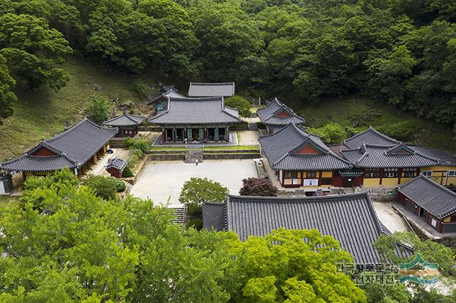
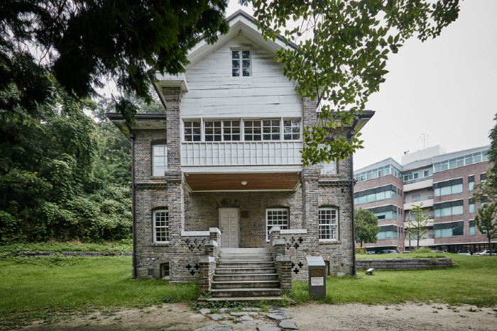

지역


arrow_back
arrow_forward


우일선 선교사 사택
미국인 선교사 우일선(Robert M. Willson)에 의해 1920년대에 지어졌다고 전해지며 광주에 남아있는 가장 오래된 서양식 주택이다. 1989년 3월 20일 광주광역시의 기념물 제15호로 지정되었다.
이 건물의 평면은 정사각형으로 1층에는 거실, 가족실, 다용도실, 부엌, 욕실이 있고 2층에는 침실을 두었으며 지하에는 창고, 보일러실이 있다.
주상절리대
무등산에 있는, 기둥 모양의 절리가 늘어선 것이다.
대한민국의 천연기념물 제465호로 지정되어 있다. 입석대와 서석대 그리고 규봉에 있으며, 입석대와 서석대에 있는 절리대의 돌기둥 하나의 크기가 지금까지 남한에서 보고된 것 중 가장 커서 주목받고 있다.